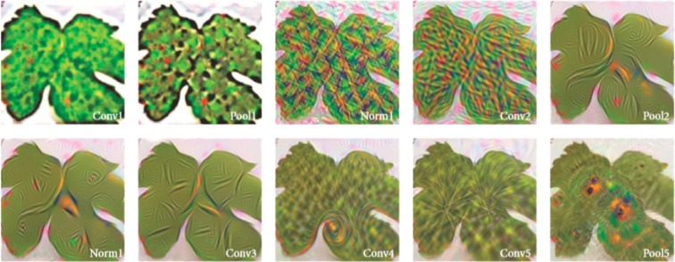
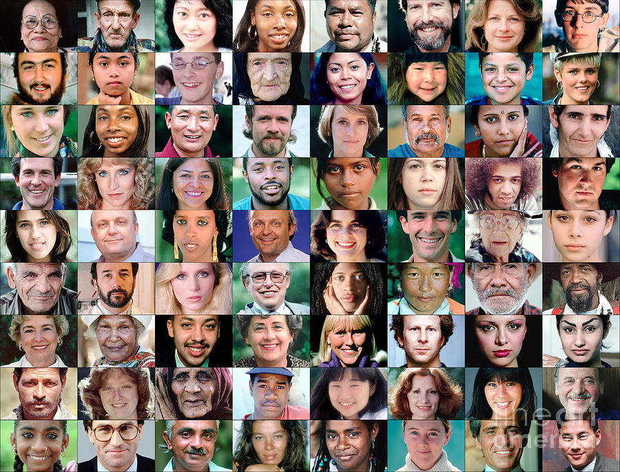
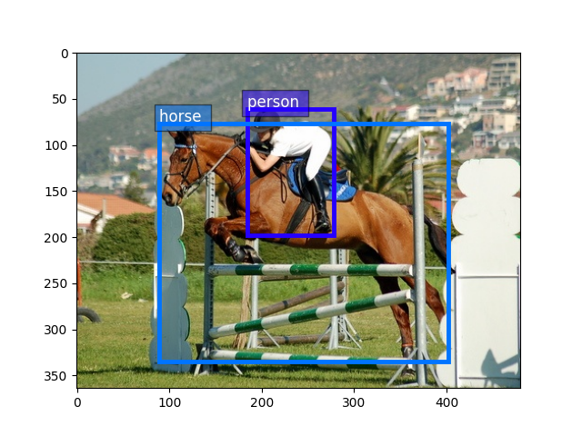

Abdellatif Ait HammadiI am an engineer student at the Computer Science Institute, part of Mohamed V University, where I study on artificial intelligence. |

|
ProjectsI'm interested in computer vision, deep/machine learning, optimization and robotics. |
|  |
Deep learning in agricultureProject , 2021 Applying the deep learning, in corps detection |

|
Faster R-CNNProject , 2021 Implementing the faster r-cnn for objects detections |
|  |
Deep fake detectorgithub Buil a model based on svm aim to detect the real from fake image |
|  |
Objects detection & recognitiongithub Buil a model based on svm aim to segmentate and recognize objected using the Pascal voc 2007 dataset. |
Chameleongithub Agglomerative clustering algorithm for maximasing intrasimilarity and minimasing intersimilarity |
|
|